薬局の皆様へ
処方箋ヘルパー 薬局向けサービスのご紹介
窓口の処方箋チェック（プランA）・外国籍の患者さんの初回問診（プランB）・その両方（プランAB） ／ 株式会社Priamos ／ 2026年11月
受付用のパソコンかタブレットのブラウザだけで使えます。レセコンや在庫管理のシステムとはつながず、レセコンのパソコンには何も入れません。
3つのプランの機能をすべて用意しており、薬局ごとに、使う機能に合わせて受付画面でプランを選べます（あとからいつでも変えられます）。
こんな場面で
A窓口で処方箋を受けたとき処方の薬が在庫にあるか、出荷調整がかかっていないかを、その場でまとめて確かめたい。
B外国籍の患者さんが来るとき日本語での初回の問診（アレルギー・服用中の薬など）が難しく、聞き取りに時間がかかる。
ABその両方来局前に届いた処方箋の薬も、窓口の処方箋も、在庫と照らし合わせたい。
3つのプラン
| プランA
窓口の処方箋チェック | プランB
初回問診の受信箱 | プランAB
AとBの両方 |
|---|
| できること |
窓口で受けた処方箋を撮影・取り込むと、AIが薬を読み取り、在庫と出荷状況を照合して表示 |
外国籍の患者さんが来局前に送った処方箋の写真と初回問診の答えを、日本語の問診票で受け取り、返信 |
AとBの機能を1つの受付画面で。届いた処方箋も在庫と照合 |
| 主な画面 |
「窓口の処方箋を照合する」・在庫CSV |
受信箱・問診票（日本語）・返信 |
照合ボタン・在庫CSV・受信箱 |
| 患者さんからの送信 |
受け付けません |
受け付けます（窓口のQRコードから） |
受け付けます |
| AIによる薬の読み取り |
窓口の処方箋 |
行いません（写真と問診票を表示） |
窓口の処方箋と、届いた処方箋 |
| 在庫CSVとの照合 |
あり | なし | あり |
AIの読み取りと照合の結果は参考情報です。調剤・疑義照会などのご判断は、これまでどおり処方箋の原本で薬剤師の方が行います。
はじめ方と、どのプランも共通のこと
1パスワードを決める
運営からお送りする「初回設定のリンク」を開き、薬局でパスワードを決めます。運営はパスワードを知りません。
2プランを選ぶ
初めてログインすると、プランを選ぶ画面（右）が出ます。説明を見て選ぶと、その機能だけが受付画面に表示されます。
3あとから変える
受付画面の右上の「プランを変更」から、いつでも変えられます。使いにくい点は「ご意見を送る」から運営に届きます。

どのプランも共通
- レセコンとは別の、インターネットにつながる受付用のパソコンかタブレットのブラウザで使います（rxhelper.jp/pharmacy）。
- プランは受付画面でいつでも変えられます。パスワードを忘れたときは、ログイン画面からメールで設定し直せます。
- 使いにくい点やほしい機能は、受付画面の「ご意見を送る」から運営に届きます。
- AIは米国のサービス（Anthropic社）を使います。窓口照合の画像は保存しません。患者さんから届いた内容は一時的に保存し、「完了」または7日で削除します。
ご用意いただくもの
| プランA | プランB | プランAB |
|---|
受付用のパソコンかタブレット
（レセコンとは別・インターネットにつながるもの） |
必要 | 必要 | 必要 |
| 在庫管理のシステムから書き出した在庫CSV |
必要 | いりません | 必要 |
処方箋を取り込む方法
（タブレットのカメラかスキャナ） |
必要 | いりません | 必要 |
| 窓口や待合にQRチラシを置く場所 |
いりません | 必要 | 必要 |
レセコンや在庫管理のシステムに、新しく何かを入れたり、つないだりする必要はありません。
プランA 窓口の処方箋チェック
在庫CSVを読み込む
（最初に1回）
›窓口の処方箋を
撮影・取り込む
›AIが薬を
読み取る
›在庫と出荷状況を
まとめて表示
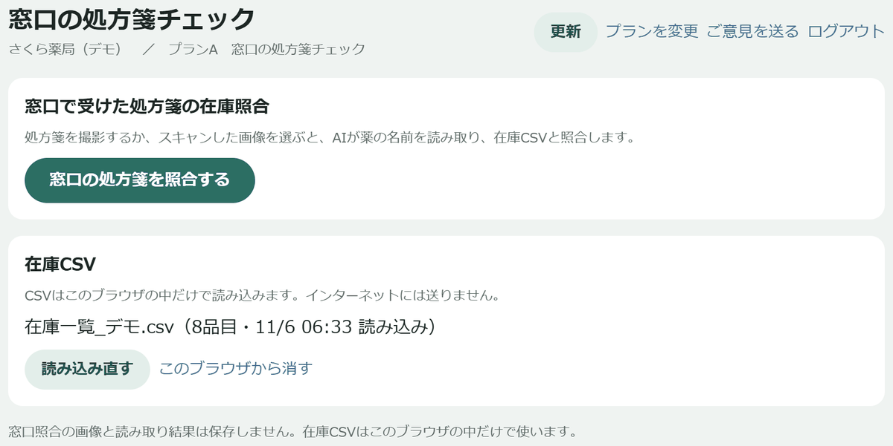
1受付画面
「窓口の処方箋を照合する」ボタンと「在庫CSV」が並びます。在庫管理のシステムから書き出したCSVを読み込むと、この端末のブラウザの中に残り、次からはそのまま使えます。CSVはインターネットに送りません。
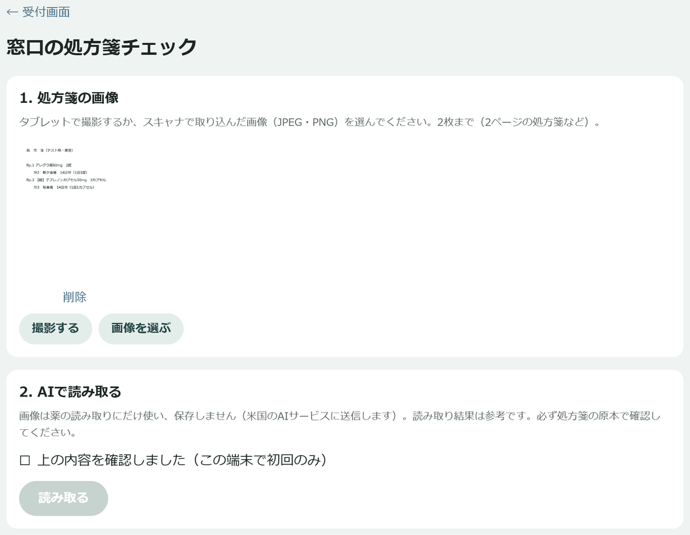
2処方箋の画像を用意して「読み取る」
タブレットのカメラで撮影するか、スキャナで取り込んだ画像を選びます（2枚まで）。「読み取る」を押すと、AIが薬の名前・用量・日数を読み取ります。
画像は読み取りのため米国のAIサービス（Anthropic社）に送り、画像も読み取り結果も保存しません。
3処方の内容と在庫（参考）
薬ごとに
必要量・在庫数と、
在庫あり／不足／在庫なしを表示します。あわせて、
限定出荷・供給停止などの出荷状況（厚生労働省の公開データ）も表示します。「印刷」で紙に、「次の処方箋へ」で画像と結果を消して次の方へ。
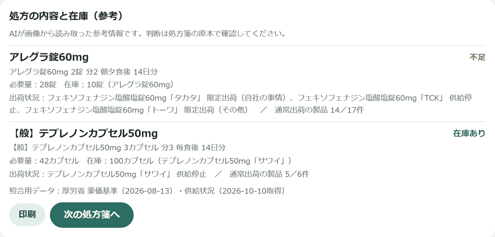
プランAが役立つこと
- 処方箋を受けたその場で、処方の薬の在庫と出荷調整の状況を1つの画面でまとめて確かめられます。
- 不足や出荷調整がわかれば、お待ちいただく時間や、ほかの薬局・後日のお渡しのご案内を早めに考えられます。
- レセコンとつながず、受付の端末のブラウザだけで始められます。画像は保存しません。
プランB 外国籍の患者さんの初回問診
患者さんが窓口の
QRコードを読み取る
›母語で初回問診に
答え、処方箋を送る
›薬局に日本語の
問診票で届く
›薬局の返信が
患者さんの言語で届く
患者さんのスマートフォンの画面
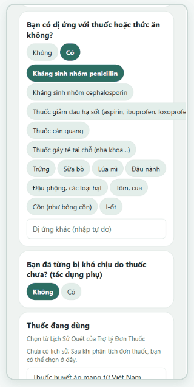
① 母語で初回問診に答える
アレルギー・副作用歴・服用中の薬などを、選択肢を中心に答えます。11の言語に対応しています。
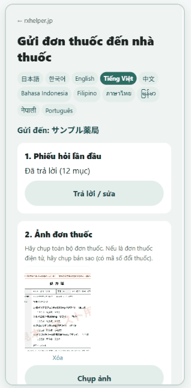
② 処方箋を撮って「送る」
受け取りの希望時刻も選べます。会員登録はいりません。
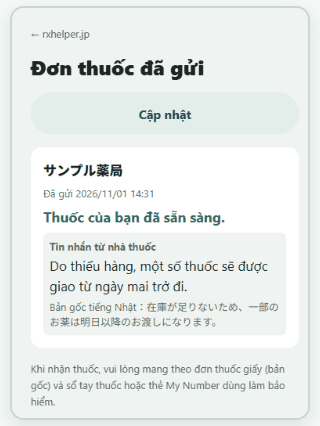
③ 返信が母語で届く
「準備できました」などの返信やメッセージが、患者さんの言語で届きます。日本語の原文も表示します。
患者さんは送信の前に、送る内容とAI（翻訳）の利用について画面で同意します。お薬のお受け取りには、これまでどおり処方箋の原本が必要です。画面は架空のベトナム語の患者さん・見本の処方箋です。
窓口に置くQRコードのチラシ
受付画面の「窓口用のQRチラシを印刷」から、その薬局専用のQRコードが入ったA4のチラシを、すぐに印刷できます。窓口や待合に置いてください。
- 使うかどうかは患者さんの自由です。これまでどおり窓口に処方箋をお持ちいただいてもかまいません。
- チラシの文面は、患者さん向けに運営が用意したものです。
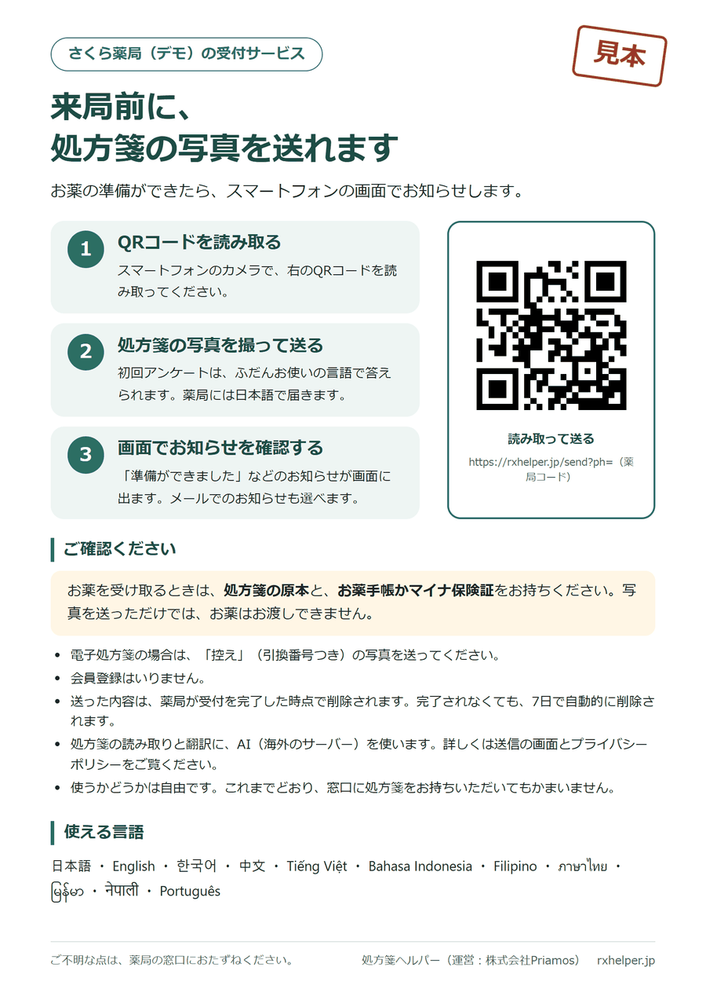
プランB 薬局の受付画面の流れ
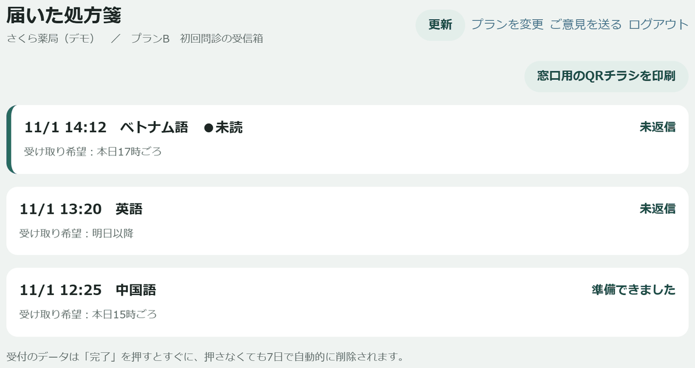
1受信箱
患者さんから届いた処方箋が並びます。30秒ごとに自動で更新し、新しく届くとお知らせします。受付の時刻・言語・受け取りの希望時刻・返信の状況がひと目でわかります。
2問診票（日本語）
処方箋の写真と、初回問診の答えを日本語の問診票で表示します。自由に書いた欄は、AIの日本語訳と原文を並べて表示します。問診票はそのまま印刷できます。
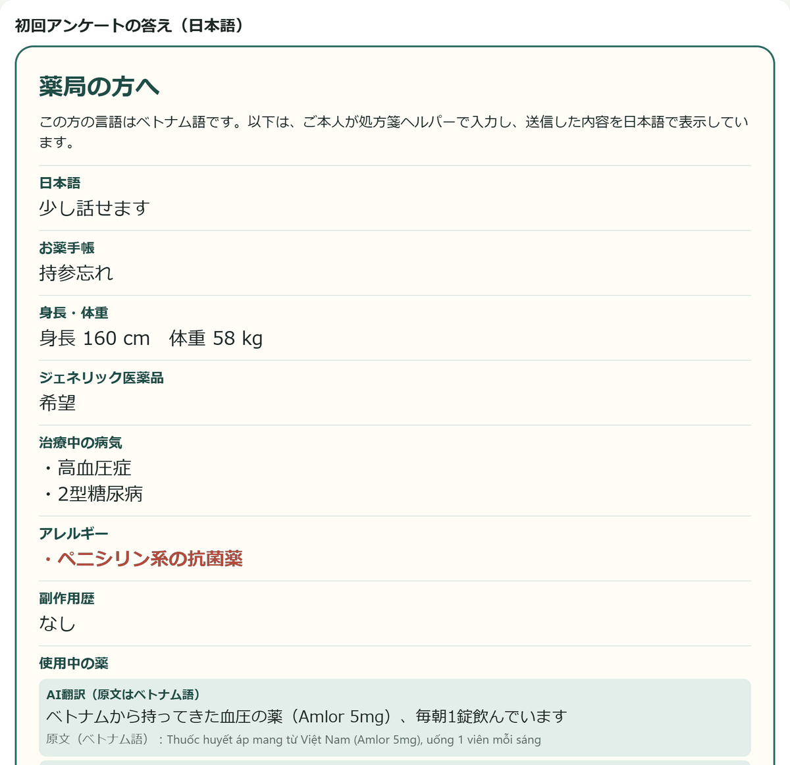
3ボタンと定型文で返信
「準備できました」「疑義照会中」「○時以降にご用意」などのボタンと、よく使うメッセージ（定型文）で返信します。患者さんの言語に翻訳して届きます。自由に書いたメッセージも、訳を確かめてから送れます。
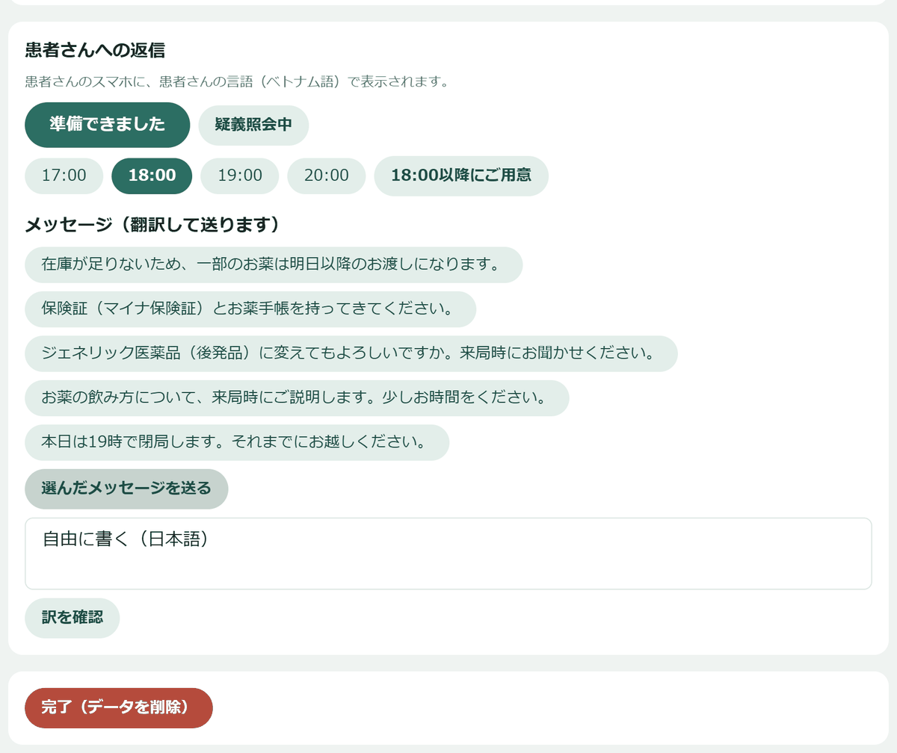
プランBが役立つこと
- 来局の前に、アレルギーや服用中の薬などの初回の問診の答えが日本語で届きます。窓口での聞き取りや、翻訳の手間を減らせます。
- 患者さんは自分の言語で、落ち着いて答えられます。薬局の返信も、患者さんの言語で届きます。
- 届いた内容は、「完了」を押した時点で削除されます。完了しなくても、送信から7日で自動的に削除されます。
プランAB AとBの両方
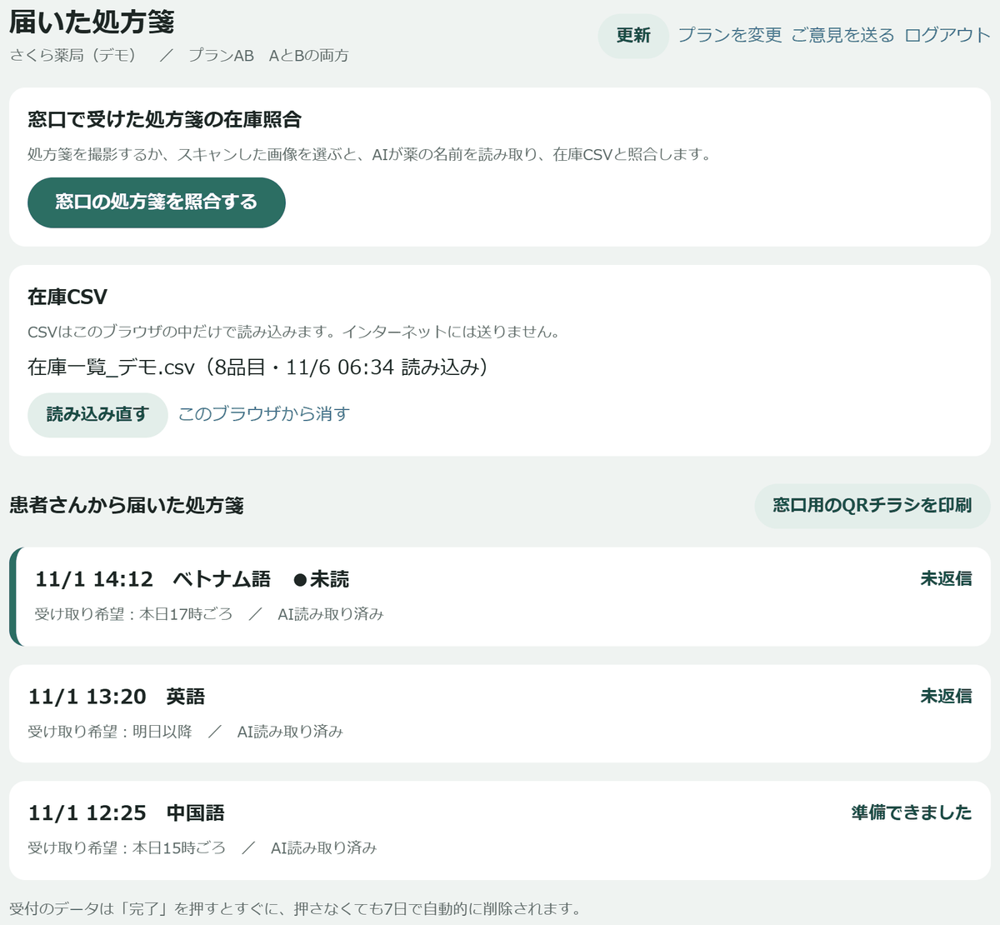
受付画面：窓口照合のボタン・在庫CSV・受信箱が1つの画面に並びます。
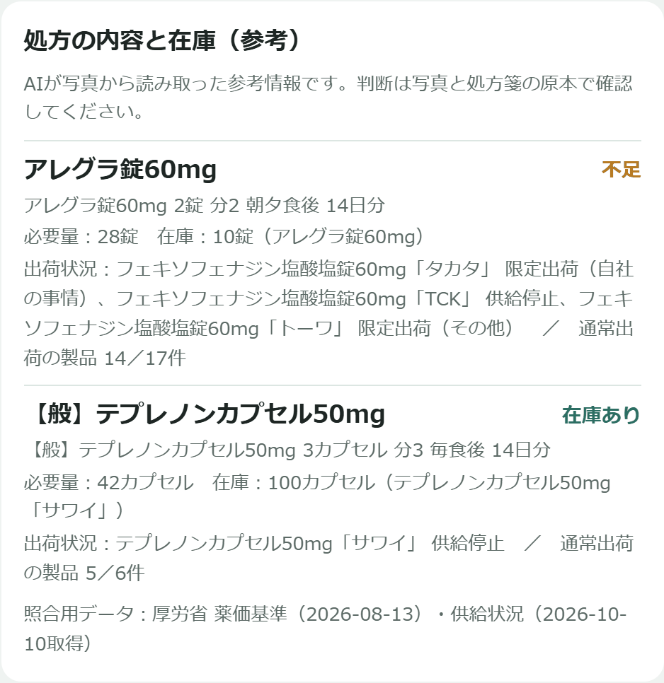
届いた処方箋の「処方の内容と在庫（参考）」：患者さんから届いた処方箋も、AIが薬を読み取り、在庫CSVと照合します。
プランABが役立つこと
- 来局前に届いた処方箋の薬が足りないとわかれば、患者さんが来る前に準備や、「一部は明日以降のお渡しになります」などのご連絡ができます。
- 窓口で受けた処方箋も、来局前に届いた処方箋も、同じ在庫CSVで照合できます。
お試しについて
お試しの間は無料でお使いいただけます。有料のサービスにする際は、料金と条件を改めてご案内し、お申し込みいただいた場合に限り有料の契約に移ります（自動的に有料になることはありません）。使い方をまとめた「ご利用ガイド」と、画面の流れがわかる「デモ動画（約2分）」もご用意しています。
お問い合わせ・お試しのご相談
株式会社Priamos（処方箋ヘルパー） メール：azabumin@gmail.com ／ ウェブサイト：https://rxhelper.jp